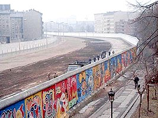

1.Software Engineering

A process of analyzing user requirements
and then designing, building, and testing
software application which will satisfy those
requirements
2.Degital Design Techniques

a type of visual communication that presents information or
a product or service through a digital interface. Put simply,
it’s graphic design made specifically to be used on computers.
3.Database And Implementation

information that is set up for easy access,
management and updating. Computer databases
typically store aggregations of data records or files that contain
information, such as sales transactions, customer data,
financials and product information.
1.Reichstag building
is a historic building in Berlin which houses the Bundestag, the lower house of Germany's parliament. was constructed to house the Imperial Diet (German: Reichstag) of the German Empire. It was opened in 1894 and housed the Diet until 1933, when it was severely damaged after being set on fire. After World War II, the building fell into disuse
2.The Berlin Wall

It was a guarded concrete barrier that physically and ideologically divided Berlin from 1961 to 1989 as well as encircling and separating West Berlin from East German territory.Construction of the wall was commenced by the German Democratic Republic (GDR, East Germany) on 13 August 1961.
3.fernsehturm germany
Located in the Marien quarter (Marienviertel), close to Alexanderplatz in the locality and district of Mitte, the tower was constructed between 1965 and 1969 by the government of the German Democratic Republic (East Germany). It was intended to be both a symbol of Communist power and of the city.